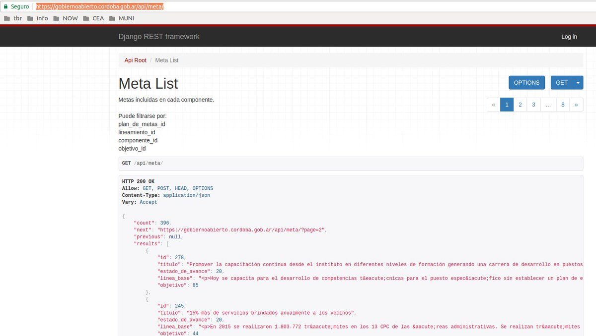
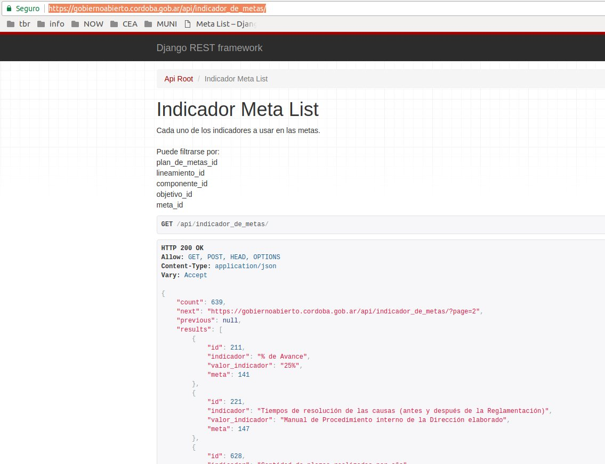
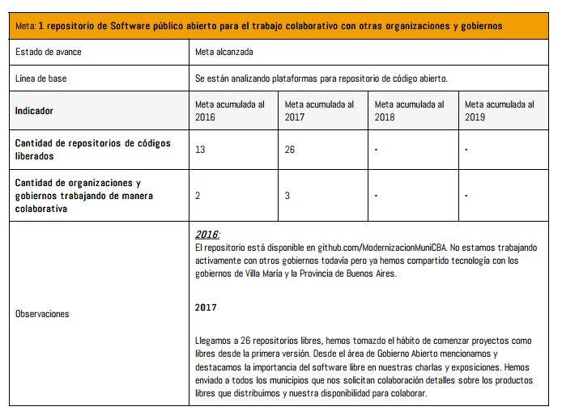
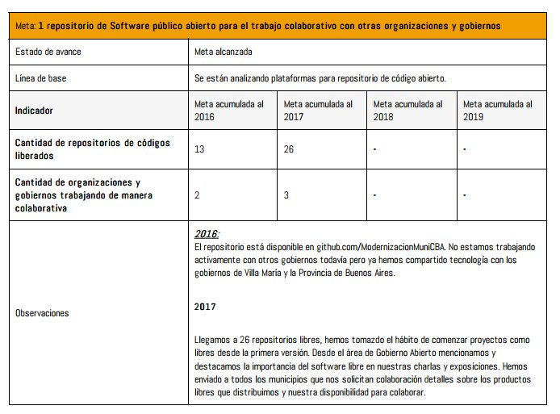

Plan de Metas Municipal — 5 webservices abiertos y un PDF que se arma solo
Originalmente publicado como hilo en Twitter.
Hoy es la audiencia pública por el plan de metas municipal.
Desde este plan 2016-2019 hay un sistema informático detrás que permite que se haga un seguimiento como nunca antes. Hay 5 webservices con info de las metas desde el primer día.


El PDF que se envía al Concejo Deliberante con las modificaciones anuales ya no se escribe a mano: el mismo sistema lo construye automáticamente.
Antes de esto, el plan era un PDF estático que alguien tipeaba a mano. Ahora las metas se actualizan en una base de datos a medida que avanzan, y el documento final se genera solo.

Ya que estamos: ¿sabías que la Municipalidad de Córdoba tiene una meta relacionada al software libre?
Para nosotros es importante. En aquel momento los municipios en general no tenían repositorios de código abierto. Tener "publicar software libre" como meta formal nos permitió ordenar y empujar ese trabajo desde adentro.

Comentarios
Comments powered by Disqus